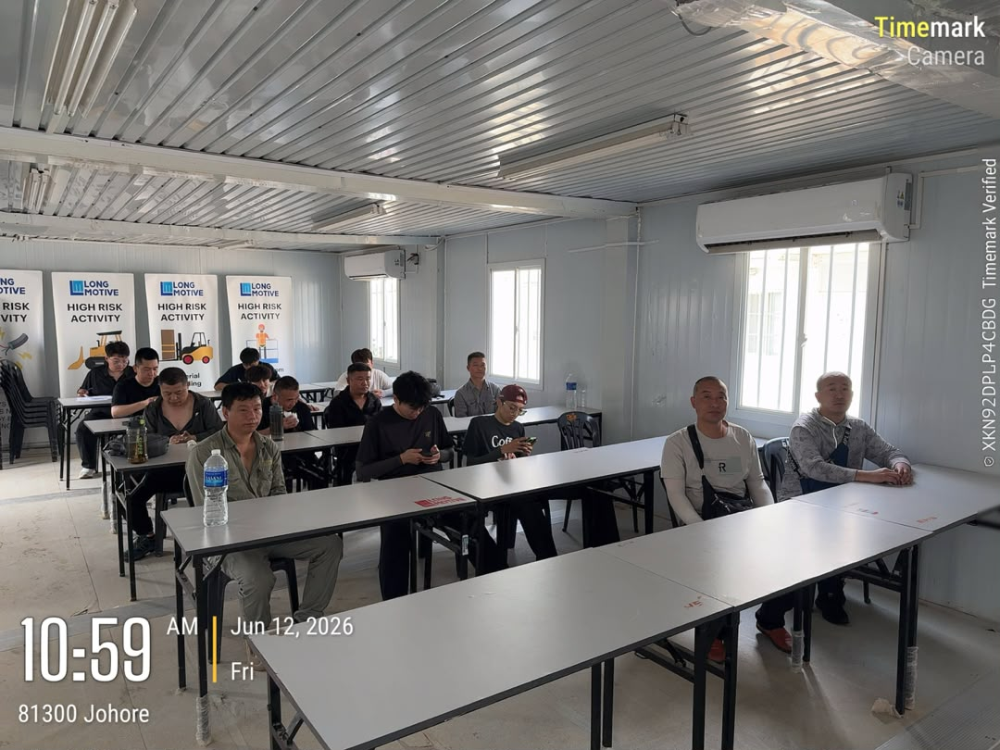

Daily responsibility
Worker induction.
I continued conducting induction every working day while checking attendance, explaining site expectations, and helping workers complete the process.
Daily induction
A month of repeated daily processes: conducting inductions, checking the warehouse, coordinating workers, and noticing where consistent records and visible follow-up are important.

Worker induction remained one of my main daily responsibilities throughout June.
Alongside induction work, I continued checking the warehouse so materials remained organised and easier to locate.
I supported the day-to-day coordination of workers by answering questions, reinforcing instructions, and helping information move clearly between people.
Our department went out for a team-building dinner, giving us time to connect in a more relaxed setting.
Two moments that represent the month: supporting workers through induction and building stronger relationships with my department.